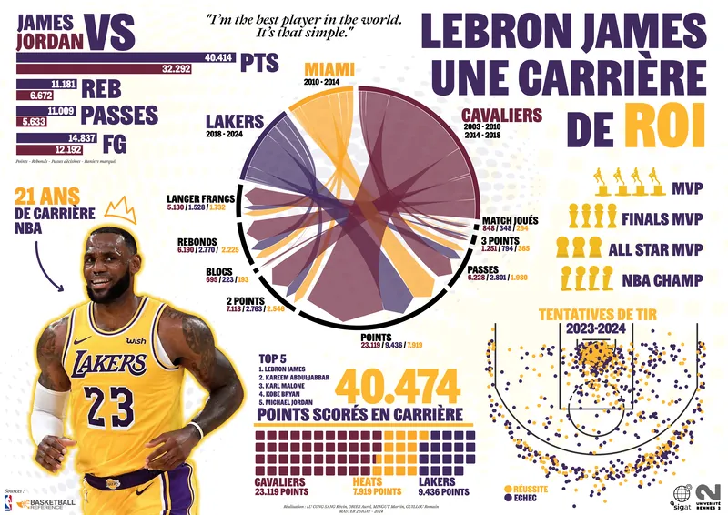

Dans le cadre du master, un exercice de datavisualisation nous a été proposé sur le thème de notre choix. Passionné par le sport, j'ai choisi de rendre hommage à la carrière exceptionnelle de LeBron James, l'un des plus grands joueurs de l'histoire de la NBA.
Cette infographie compare ses statistiques emblématiques à celles de Michael Jordan, tout en mettant en lumière ses performances au sein des Cavaliers, du Heat et des Lakers.
Pour y ajouter une dimension spatiale, j'ai intégré un "shoot chart" (carte de tirs), basé sur les coordonnées X/Y des tentatives de tirs effectuées durant la saison 2023-2024 — une façon d'introduire la géométrie du jeu dans la narration visuelle.
Les données sportives ont été extraites et compilées depuis Basketball Reference, puis nettoyées et organisées pour produire différents indicateurs clés de performance.
Le shoot chart a été généré avec l'outil de visualisation Flourish, en exploitant les coordonnées spatiales des tirs pour en faire une lecture visuelle du jeu.
L'ensemble du design graphique a été réalisé sur Illustrator, combinant données statistiques, infographies circulaires et cartes de tir, pour raconter visuellement la carrière de LeBron James sous un angle à la fois analytique et visuel.